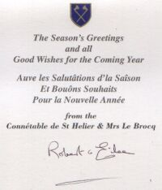

Trenton, Michigan, USA.
Lé 4 dé dézembre 1982.
Moussieu l'Rédacteu,
 N'èrvélà Noué tch'apprèche, et j'profite dé l'occâsion pour souhaiter à touos m's anmîns en Jèrri et ailleurs, à la pliache d'env'yer des cartes d'Noué, un bouan Noué, eune bouanne année, bouan pid, bouan yi, bouanne dent, et l'Paradis à la fin d'lus jours. L's aut' années j'ai ieu l'habitude d'en env'yer dans les deux chents, d'ches cartes, un mio partout l'monde, mais ch't' année j'n'ai pon l'couothage d'entanmer la tâche, Né v'là chein tchi s'arrive quand nou veint à dêpasser nénant'tch'iuns ans!
Lé pâssage du temps a changi les vielles crianches et couôteunmes. Quand j'tais mousse ès Landes à St Ouën, ch'tait acouo la couôteunme d'aller crier Noué par les c'mîns, chantant "Noué! Noué! - man Noué, man Noué, s'i' vous pliaît!" Mais Papa et Maman né mé pèrmettaient pon dé l'faithe mé-même car i' m'disaient qué ché n'tait pon la chose dé tcheûter, et tch'i' fallait s'contenter dé chein qué Papa Noué s'en aller mett' dans la cauche pendue à côté d'l'âtre et s'garder siez-sé à l'exception, sans doute, des touos pauvres.
Nou-s-attendait fête toute l'année dé vaie Noué arriver. J'm'èrsouveins qué, ayant pendu ma cauche, j'tais dêtèrminné en m'couochant qué j'allais rester rêvilyi pour vaie Papa Noué mett' des présents d'dans, car j'avais dêjà, dans chu temps-là (j'pâle des années 1894 à 1900), cèrtaines doutanches au sujet d'la d'scente dé Papa Noué par nouot' cheunm'née. Mais j'finnissais tréjous par m'endormi et v'là tchi n'm'empêchait pon d'apprécier l'orange et les deux's-trais codrettes que j'trouvais dans la cauche en mé l'vant l'matîn du jour dé Noué, La tchestchion d'la cheunm'née comme entrée d'Papa Noué 'tait r'mînse à l'année en r'vénant!
L'arrivée d'chu fanmeux jour 'tait eune vraie jouaie, car l's oncl'yes et tantes et lus fanmil'yes arrivaient étout pour lé célébrer auve Papa et Manman. Et lé r'pas qué Manman griyait pour l'occâsion 'tait un vrai festîn. Papa faîsait la priéthe pour èrmèrcier l'Bouân Dgieu pour nouos aver fait la grâce d'êt' touos ensembl'ye acouo eune fais pour célébrer la fête. Et i' y'avait tréjous un p'tit présent ou deux pour chaque mousse.
L'arbre d'Noué, du vèrt bouais qué Papa copait dé d'ssus l'fossé dans La Rue Féthièthe, 'tait mâté sus un dgéridon dans la carre dé la tchuîsinne, décoré atout des p'tites lantèrnes tch'avalent des f'nêtres en vèrre couleuthé rouoge et bliu. V'là tchi donnait eune lueu tch'était pour mé mystéthieuse.
Dans chu temps-là les gens avaient acouo la crianche qué les vaques lus agenouoillent à mînniet la sèrvelle dé Noué en adorâtion du Sauveur, et pèrsonne n'ôsait aller dans l'êtabl'ye à vaques à ch't' heuthe-là. Et i' y'avait la sonn'nie des clioches des églyises parouaîssiales dé St Ouën, Ste. Mathie et St Pièrre dépis méjeu la sèrvelle jusqu'à mînniet l'jour dé Noué, et man p'pèe et m's oncl'yes Ouinn'teur et Dâl'pheusse allaient prendre lus tou à sonner la cheinne dé St Ouën.
I' pathaît qué chutte couôteunme existait dépis 1468, quand les Français tch'avaient otchupé l'Île duthant l's années 1461 à 1468 fûdrent chassés hors dé Jèrri. La libéthâtion arrivant dans les temps d'Noué, la jouaie fut célébrée en sonnant les clioches des églyises du ouêst, tch'avait 'té la dreinne partie d'l'Île à être otchupée par l'ennemîn et la preunmiéthe à être libéthée.
Pus tard, quand j'avais douze ans, j'allis d'meuther siez pârrain et mârraine d'Aubert à La Mouaie à St Brélade. Ches vielles crianches et couôteumnes qué j'avais connu à St Ouën pathaîssaient aver 'té oubliyées par les St Bréladais, ou du mains j'n'en ouïyais pon pâler. Les sèrvices dans l'églyise parouaîssiale dé chutte pâraisse 'taient en Angliais et l'jour dé Noué prînt eune nouvelle sîngnificâtion pour mé quand j'vis qu' san nom Angliais de "Christ-mas" lî'avait 'té donné viyant qué la Sainte Églyise célébrait la naîssance dé nouotre Seigneu Jésû Chri auve eune mêsse (la Sainte Cène) spéciale touos l's ans chu jour-là, appelée la Mêsse du Christ. V'là tchi lî donnait eune sîngnificâtion r'ligieuse tchi n'm'avait pon frappé d'vant et tchi m'a resté dans l'idée jusqué dans mes vièrs jours.
Ouaithe qué les vielles crianches et couôteunmes dispathaîssent auve lé pâssage du temps, comme jé l'disais d'vant, comme nouos l'dit un vièr diton: "À forche dé crier Noué, i' veint tréjous" !
Viyiz étout: